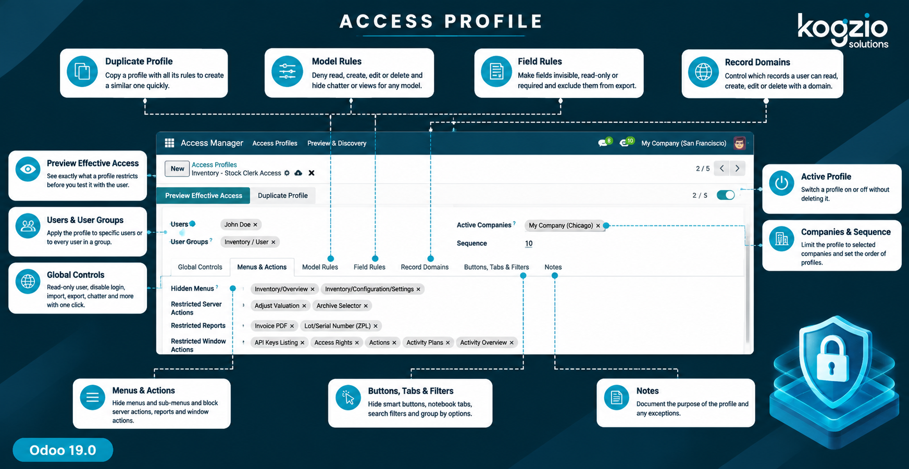
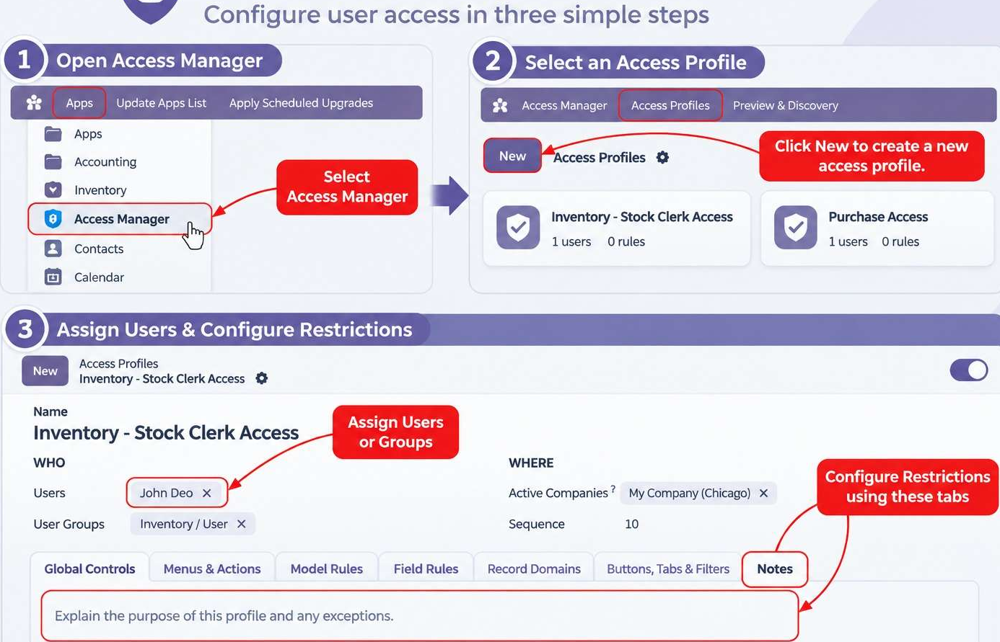
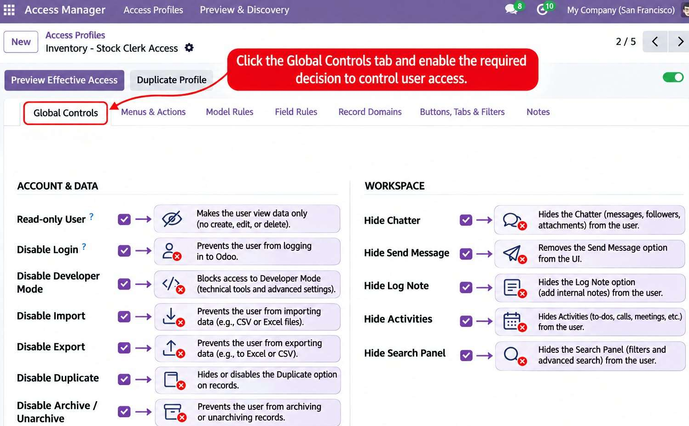
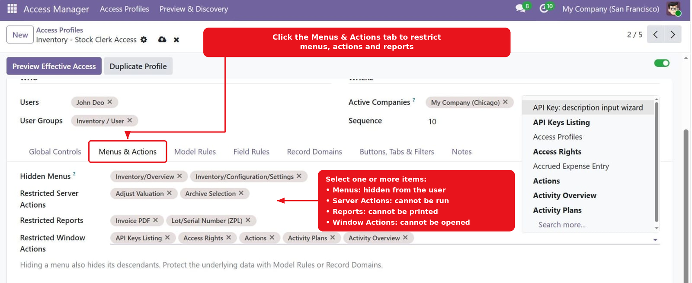
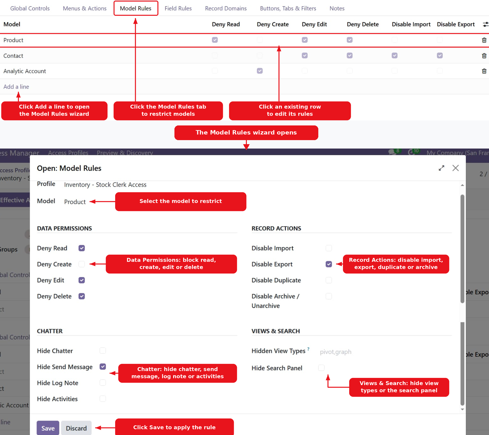
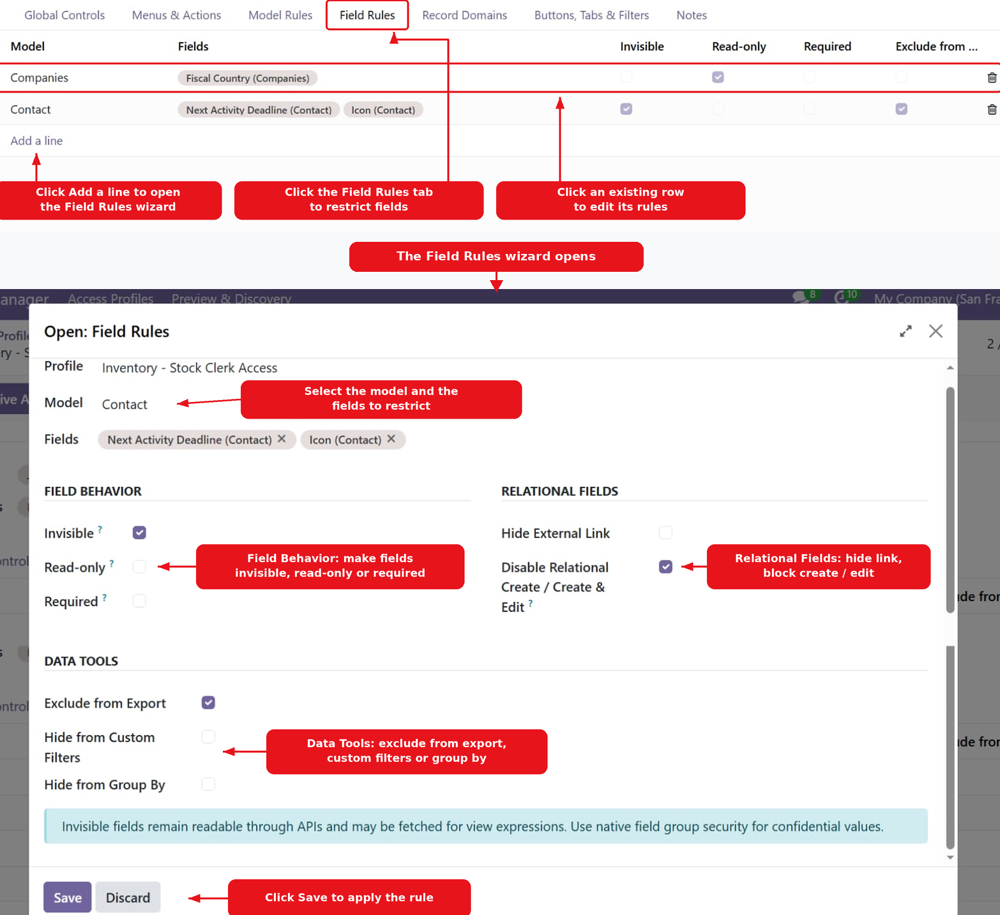
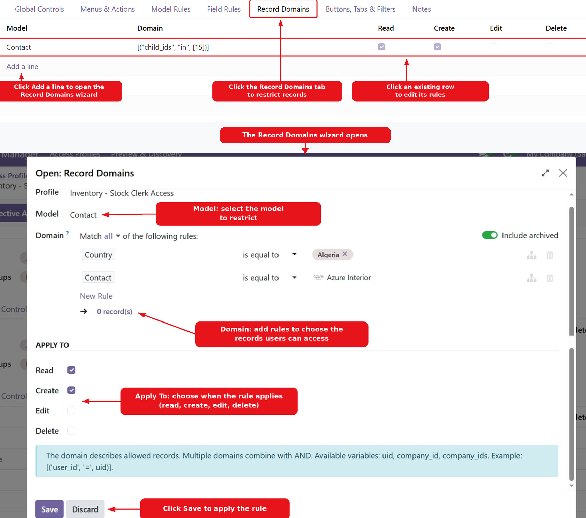
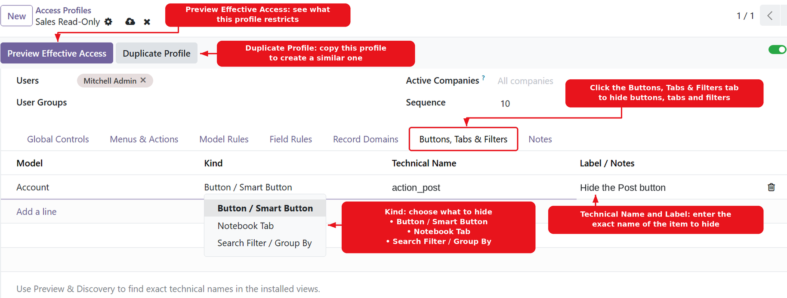

Configure additional user-specific access policies from a centralized profile. Manage supported restrictions for menus, models, fields, records, views,actions and chatter, then verify the effective configuration for the intended user. Built by Kogzio Solutions for Odoo 19.
Access Management lets administrators create access profiles and apply them to selected internal users, user groups and companies. A profile brings related access settings together so administrators can configure and review restrictions in one place.

Configure global controls, menu and action restrictions, model rules, field rules, record domains and selected view-element restrictions. Use the available preview and discovery actions to inspect effective restrictions and identify view element names.
Access ProfilesCreate profiles and assign them to selected internal users, user groups and companies. |
Global ControlsConfigure supported read-only, login, developer-mode, import, export, duplicate, archive, chatter and search-panel controls. |
Menus & ActionsSelect menus to hide and restrict selected server actions, reports and window actions. |
Model RulesConfigure read, create, edit and delete restrictions, along with supported model-level controls and view types. |
Field RulesConfigure field visibility, read-only and required behaviour, relational create options, export, custom-filter and Group By restrictions. |
Record DomainsApply configured domains to read, create, edit and delete operations. Multiple configured rules are combined using AND. |
Buttons, Tabs & FiltersHide configured buttons or smart buttons, notebook tabs and search filters / Group By elements by their technical names. |
Preview & DiscoveryInspect effective restrictions for a selected user, company and model, and discover supported view element names. |
Additional profile notes and duplication options are available to help administrators maintain their configurations.
Create or open a profile, enter its name, and choose the intended users, groups and companies. Configure the relevant tabs according to the access policy you want to apply. Review the profile before testing with the target account.

Configure the profile-wide controls available in the module, including read-only behaviour, login restriction, developer-mode visibility, import and export, duplicate and archive operations, chatter options and the search panel. Review each setting carefully before assigning the profile to users.

Select the menus that should be hidden for the profile. The module also provides selections for restricting server actions, reports and window actions. Menu visibility is a user-interface control; configure model rules as well when the underlying records must be protected.

Add a model rule and select the target Odoo model. Configure the operations to deny and any supported model-level options, such as import, export, duplicate, archive, chatter, search panel or view-type restrictions. Use separate rules for the models that need different policies.

Select a model and its fields, then configure supported field behaviour: invisible, read-only or required. Additional options can prevent relational create / create-and-edit in the interface and exclude fields from export, custom filters or Group By. Invisible fields should not be treated as confidential data protection; use appropriate server-side permissions for sensitive data.

Define a domain for the selected model and choose the operations to which it
applies: read, create, edit or delete. The domain editor supports the variables
uid, company_id and company_ids.
Multiple rules for the applicable profile are combined using AND.

Add a supported element rule and choose whether it targets a button / smart button, notebook tab or search filter / Group By element. Enter the exact technical name from the view. Use Preview & Discovery to help identify available element names.

Odoo 19.0 - Community Edition & Enterprise Edition
Depends on: base, web,
mail, base_import
Technical Module: access_manager
Developed by Kogzio Solutions
License: LGPL-3
Email:
info@kogzio.com
Website:
https://www.kogzio.com/
For support and customization enquiries, contact Kogzio Solutions.